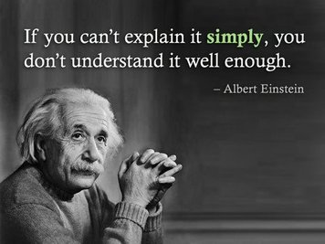

I Don't Understand...poems are a chance for poets to list, and maybe make a little more sense, out of what they don't understand. These poems don't end with a total lack of understanding though, as they always end with what the poet
does understand.
Directions: Create two I Don't Understand...poems. First, begin the poem with "I don't understand..." and list three things you do not understand about the world or people. Next, list what you do not understand
most of all. Finally, end the poem with an example of something you
do understand.
Student Examples:I DON'T UNDERSTAND...I don't understand
why people dislike me
why people can't get along
why dogs are colorblind and cats aren't
But most of all
why people are prejudiced
why people must move away
why people argue over stupid stuff
why there are wars
What I understand most is
why trees grow
why birds chirp
why the suns shines
why the car goes.
---Wayne Campbell (Grade 8)